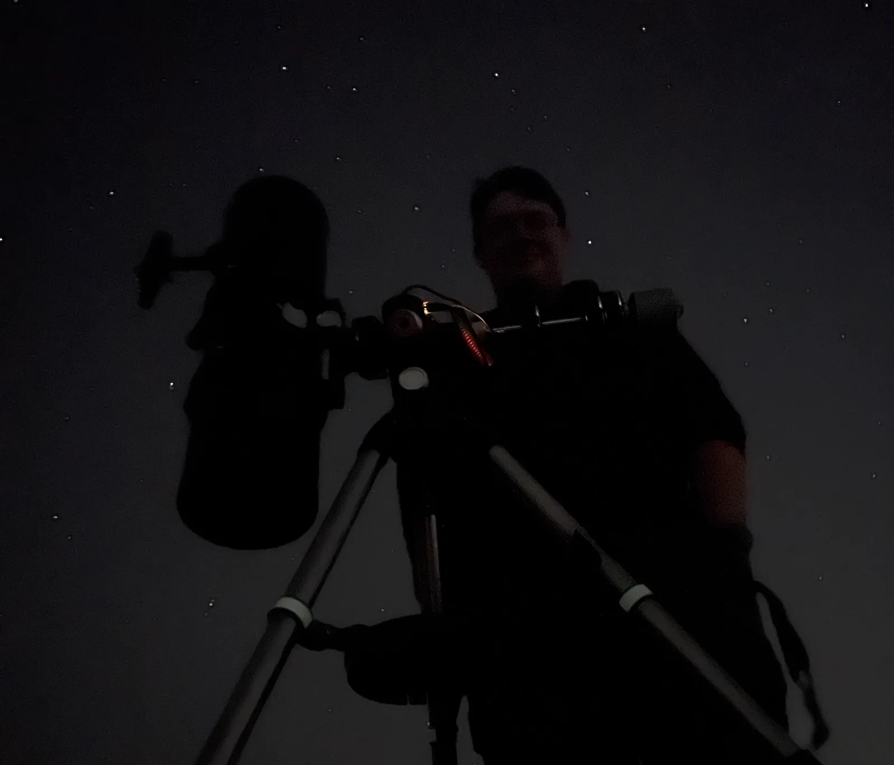
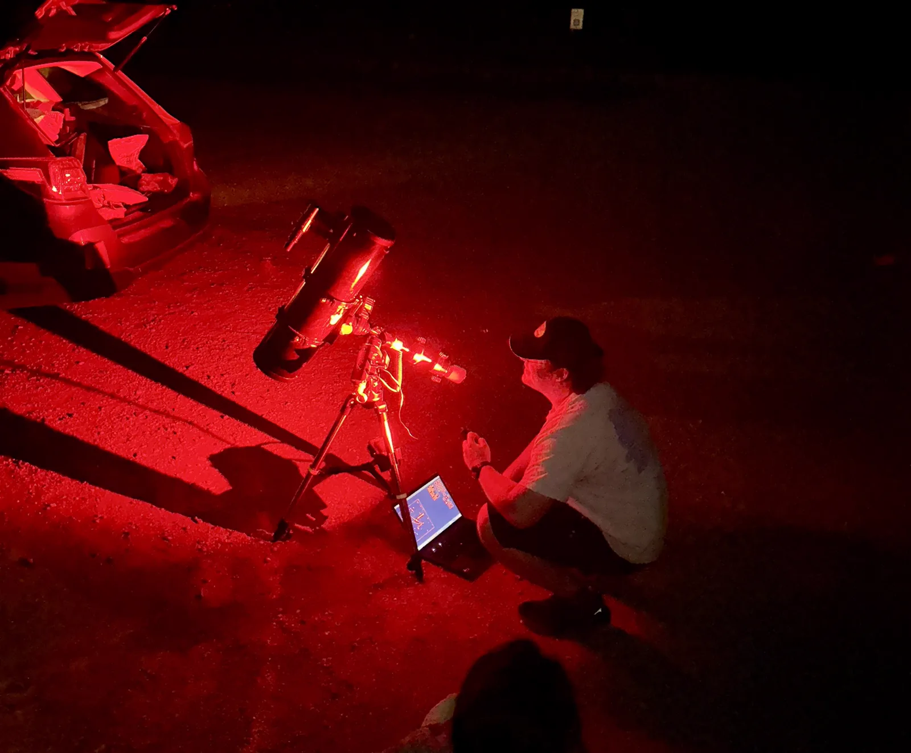
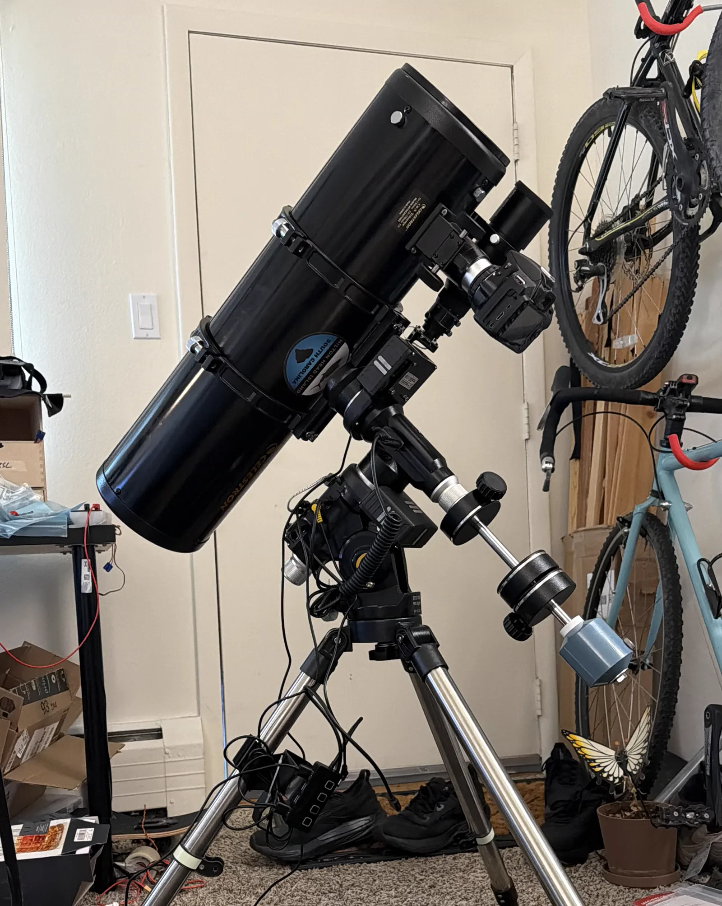

Nick Niziolek - PMC8 and 6" Newtonian -------------------------------------
what the heck am I talking about: Long ago, in a galaxy far far away (about 6 months ago and 45 min south of my apartment), I picked up an old Newtonian telescope and motorized equatorial mount from a guy on fb market place. It was a cheapo deal, no counterweights, didn't think the mount worked, weird rattle in the scope, but was exciting! Turns out, the mount was in better condition than he thought (though more on that later), and the scope just needed the collimation screws on the mirror to be tightened a bit. And so, I got it up and running, and got hooked right away. Now if you read the above and thought "well, that doesn't sound like it was very hard", I wish that was the case. But hey, what would be the fun if it was easy!!

the mount: Turns out, as you may expect, telescope mounts have to be pretty precise at pointing at things. Turns out, as you may expect, this mount was not good at doing that right away. While slewing (moving the scope), the stepper motors would occasionally stall out and make that spooky sound (those who have heard know how bad it osunds). Stalling steppers -> biases introduced into where the telescope thinks it's pointing -> pointing the wrong way. This initial problem (after an embarassingly long amount of hunting and trying to fix gear mesh on worm gears) turned out to be due to inconsistent wear patterns on the smash washers used to take the axial load on each axis of the mount, causing rubbing in specific spots along the rotation. This was fixed, believe it or not, by just flipping over the washers... I am not complaining about a cheap fix though! Now, the mount is able to perform slews (for the most part) and maintain tracking!! But on the note of tracking: it ain't amazing at it yet. This is less of the mount's fault, and more of mine. This mount is rated for ~15 lbs of gear on top of it, I am putting ~22 lbs. Now normally, it should be able to handle the extra weight, and some old guys on forums reported doing just that. Unfortunately, Boulder has been massively windy and the giant Newtonian telescope is like a sail, and has been making very shaky pictures! Still to be fixed. The last piece of the puzzle on the mount was how to control it from my laptop. The obvious answer was plug it in over USB, but I am extra, and that wasn't going to be good enough for me! I learned about a program called INDI, or Instrument-Neutral Distributed Interface. This is a generic astronomy control software which acts as an interface between star viewing programs and actual hardware. I am running a pi zero 2w taped to the top of the mount connected to it over USB, with the pi zero connnected to my laptop over wifi. This allows me to remotely control the mount! Don't even ask how long that took to actually get working.

the scope: The scope on my current project is a pretty cheap Celestron C6-N Newtonian reflector. It has a 6" mirror, and weighs ~12 lbs. It was originally intended for visual only, and I can definitely see that in images, though, it is pretty cool to watch the giant tube slewing around! I helped it as much as I could by collimating the mirror, done with a laser shined down the tube, looking for how centered the return is, and adjusting a few screws at the back. This helps eliminate some weirdness in how things are stretched by it. One of the first things I did with the scope was remove the finder scope, or the mini scope mounted on top for visual positioning. This was for weight reduction. I can technically do some astrophotography without a finder scope, but once I start trying to get my target pointing down, and really stay on target, I need a guide scope. This is currently the only piece of my setup that I bought new, and I am using a 50mm guide scope off amazon. The guiding is done using another pi zero 2w, connected to a pi cam HQ, which is adapted to fit on the scope. This setup sends images back over wifi to then send the corrections to the mount.
the camera: Finally, what is astrophotography without a camera! The first attempt at a camera was using a pi cam HQ, a 12 MP camera designed for the raspberry pi. This was a super fun thing to mess around with, but ended up being way more of a headache than it was worth. During a visit to my parents, I was able to snag an old Nikon DSLR to use as my sensor instead. This is what is currently mounted up, and has been working great! I took some pictures with it on the mount without the scope, and you can find those on [this page]. The pi cam HQ got repurposed as the guide cam, so it is not done doing it's job yet!![home] last updated: March 2026
the full current setup with the guide scope and DSLR mounted up